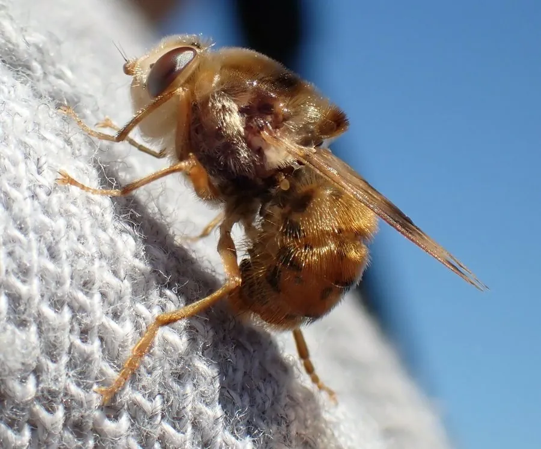

昆虫 · 动物界
马胃蝇 Gasterophilus intestinalis

幼虫寄生在马胃里的苍蝇，雌蝇把卵产在马毛上，卵孵化后幼虫经口进入马胃，是马属动物的重要寄生虫。
- 分类
- 门节肢动物门纲昆虫纲目双翅目科胃蝇科属胃蝇属
- 栖息环境
- 马厩、牧场等养马环境，幼虫寄生在马胃中
- 地理分布
- 全球养马地区，中国北方和西北牧区有分布
- 保护级别
- 暂无评估
物种志
马胃蝇成虫体长 10–15 mm，体表覆盖黄褐色和黑褐色的绒毛，外形像蜜蜂；复眼大，口器退化，成虫不吸血也不取食。它的生活史几乎都围绕马匹展开。
马胃蝇分布于全球养马地区。雌蝇把卵附着在马的前腿、肩部和体侧的被毛上，卵孵化后幼虫经马匹舔毛时进入口中，随后移动到胃部，用口钩固着在胃壁上生活，发育数月后随粪便排出，在土壤中化蛹。幼虫寄生可引起马匹胃部炎症、食欲下降、消瘦和消化不良，严重时影响生长发育。防治上主要依靠定期驱虫、清理马厩和刷洗马体，减少卵的附着。目前它没有IUCN 的正式评估，中国未将其列入国家重点保护野生动物名录。
形态与习性
- 食性成虫口器退化、不取食，幼虫寄生于马胃
- 体长10–15 mm
- 繁殖雌蝇把卵黏在马前腿和肩部的毛上
- 生活史幼虫经口进入马胃，发育数月后随粪便排出化蛹
- 危害引起马匹胃部炎症、消瘦和消化不良
- 防治定期驱虫、清理马厩和刷洗马体
趣味知识
- 马胃蝇的成虫口器退化，完全不进食，寿命只有几天。
- 它的幼虫用口钩挂在马胃壁上生活，发育完成后随粪便排出。
- 雌蝇把卵黏在马前腿和肩部的毛上，马舔毛时把卵吞下。